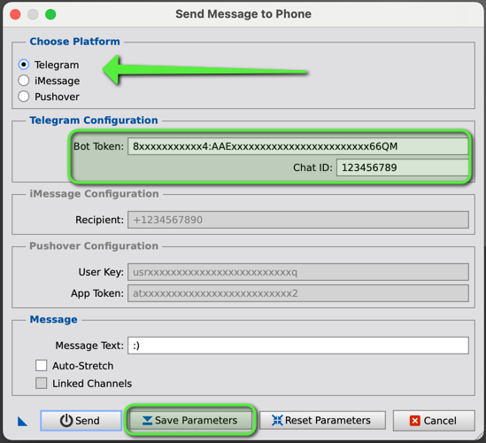

A PixInsight script for sending notifications at key events in the WBPP pipeline. [more]
Keywords: WBPP, Telegram, iMessage, Notifications, PixInsight, Pipeline, Automation
[hide]
[hide]
The Notification Event Script provides a way to receive real-time notifications during the execution of the Weighted Batch Preprocessing (WBPP) pipeline in PixInsight. This script supports multiple messaging platforms, including Telegram and iMessage, to send updates, error messages, and image notifications.
[hide]
In order to use the Notification Event Script with WBPP (Weighted Batch Preprocessing), you first need to configure the notification system you want to use. This is done through the SendMessageToPhone script, which currently allows you to select either Telegram or iMessage as the platform to receive notifications.
Follow the steps below to configure the notification system:
Step 1: Open the SendMessageToPhone script in PixInsight's Script Explorer.
Step 2: Select the messaging platform you want to use: Telegram or iMessage. You will see two radio buttons: one for Telegram and one for iMessage. Click the radio button next to the platform you want to use.
Step 3a: If you selected Telegram, you will have to enter the Telegram Bot Token and Chat ID. To send notifications via Telegram, you'll need to Set up your Telegram Bot first.
Step 3b: If you selected iMessage, enter the Phone Number of the recipient in international format. For iMessage, enter the recipient of the person who will receive the notifications. This is likely your own Apple ID if you'd like to receive the notifications yourself, but technically you could insert any AppleID here. Ensure PixInsight has the rights to execute AppleScript: Run the script standalone once, at which point it will ask for the necessary permissions. Accept.
Step 4: Save the configuration by clicking the Save Parameters button. Once you've filled out the necessary fields, click the Save Parameters button to save your settings. This will store the Bot Token, Chat ID, recipient phone number, and other options so that the script can send notifications during the WBPP process.
An example of a Telegram Bot Configuration
[hide]
Notifications typically include:
Example messages:
WBPP started
ImageIntegration starting: processing 48/62 active frames
LocalNormalization failed, Cannot open reference image
WBPP terminated
ImageIntegration successfully executed
[hide]
Setting Up a Telegram Bot
Finding Your Telegram Chat ID
"ok": true,
"result": [
{
"update_id": 83xxxxx35,
"message": {
"message_id": 2643,
"from": {...},
"chat": {
"id": 123456789,
"first_name": "...",
"last_name": "...",
"username": "@username",
"type": "private"
},
"date": 1703062972,
"text": "/start"
} } ]}
[hide]
[hide]
Copyright © (c) 2025 Luca Bartek